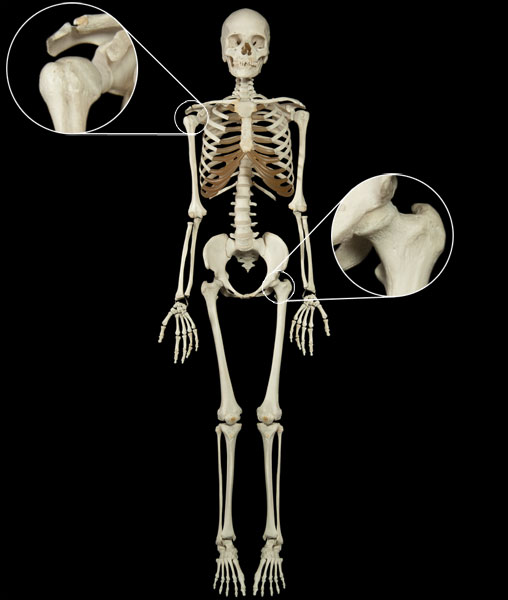

A ball and socket joint is a mulitaxial joint which is composed of the ball-like end of one bone and the socket, or depression, on the end of another bone. Ball and socket joints are classified as multiaxial joints because they allow rotation as well as motion in many different directions. Some examples of ball and socket joints include the joints of the hip and shoulder.
